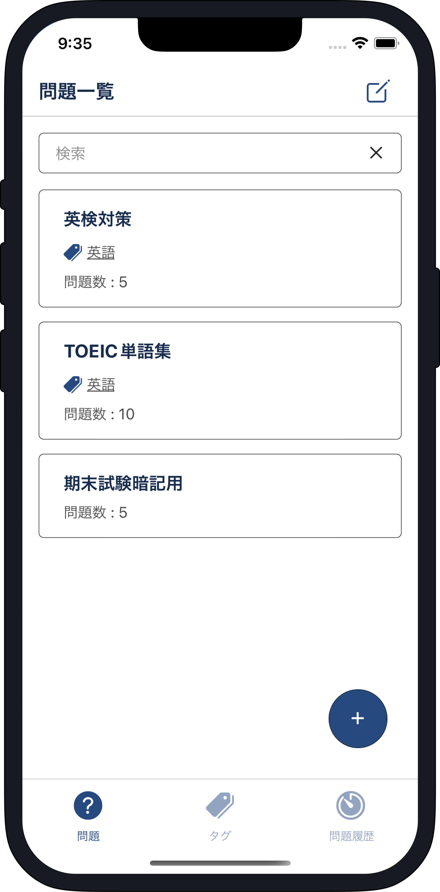
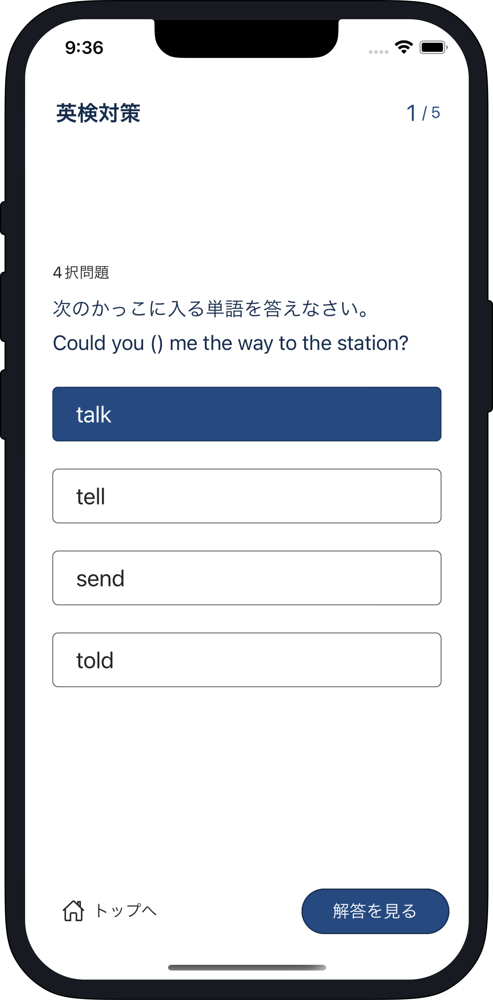
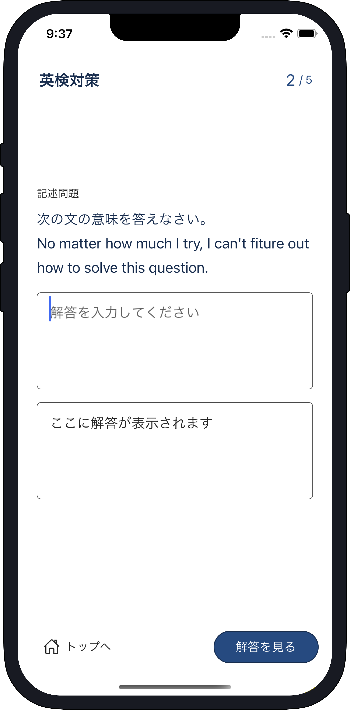

Quizur
問題作成アプリ

Quizurは
シンプルさ
にこだわった
問題作成アプリです
簡単に問題を作成し、すぐに解き始めることができます
シンプルでわかりやすい
 
直感的に理解できるようシンプルなデザインで複雑な設定は不要です。
機能仕様
01
問題作成
暗記、4択、記述の三つのタイプから好きな問題を作成することができます。
作成した問題は問題一覧画面に表示されます
問題一覧画面の各問題を押下することで、問題を解き始めることができます。
02
タグ作成
暗記、4択、記述の三つのタイプから好きな問題を作成することができます。
作成した問題は問題一覧画面に表示されます
問題一覧画面の各問題を押下することで、問題を解き始めることができます。
03
問題履歴
暗記、4択、記述の三つのタイプから好きな問題を作成することができます。
作成した問題は問題一覧画面に表示されます
問題一覧画面の各問題を押下することで、問題を解き始めることができます。